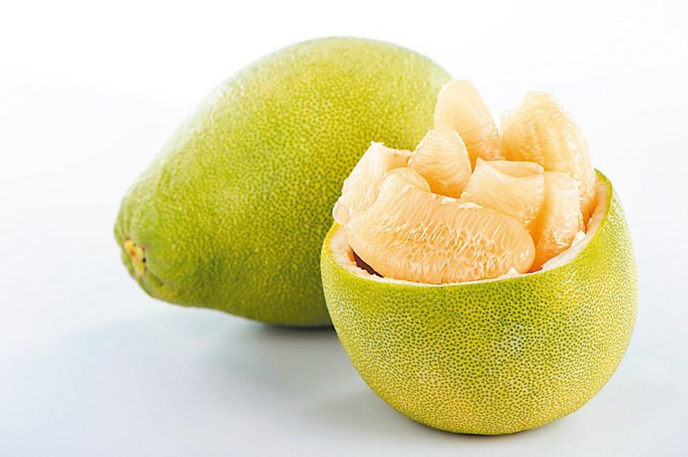
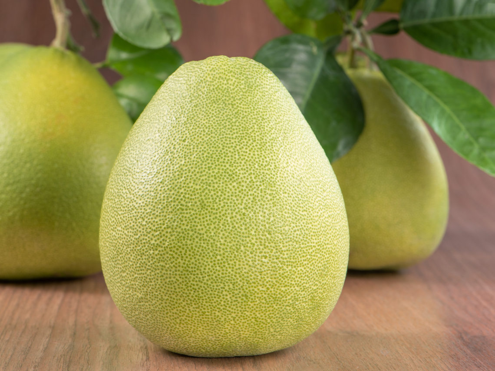

南部
|  |  |
熱量 :
38/100g
水果介紹 :
質厚而粗，油胞大，剝皮容易，果形因品種而不同，而有球形、洋梨形、扁球形等。果肉白色淡紅或紫紅色，砂囊大而長，汁多，甜酸適度，種子大而外皮皺。
營養成分 :
水分、蛋白質、粗纖維、醣類、維生素C、鈣、鈉、磷、鐵等
如何挑選 :
果形端正，果皮細薄光滑，果色淡黃或黃綠，具香氣，有重量感，不乾縮者為上品
小秘訣：柚子還可以做為冰箱的除臭劑，把剝下來的柚皮放在冰箱的角落，柚皮的清香可以有效地消除冰箱中的異味。